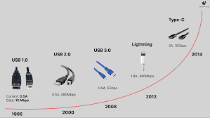

The Universal Serial Bus (USB) has come a long way since its inception in the mid-1990s. Initially designed to standardize the connection of peripherals to personal computers, USB technology has evolved to become an integral part of modern computing. This article delves into the history, development, and future of USB technology...
agraphs and images as needed.History of USB
The first USB standard, USB 1.0, was released in 1996. It aimed to simplify the connection of external devices to computers, replacing the myriad of connectors and protocols used at the time. USB 1.0 offered a data transfer rate of 12 Mbps, which was sufficient for most peripherals of that era, such as keyboards, mice, and printers.
Evolution of USB Standards
Over the years, the USB standard has undergone several upgrades to improve data transfer rates and power delivery capabilities:
- USB 2.0 (2000): Introduced a significant speed boost with data transfer rates of up to 480 Mbps. This made USB suitable for external storage devices, webcams, and other high-bandwidth peripherals.
- USB 3.0 (2008): Also known as SuperSpeed USB, it increased data transfer rates to 5 Gbps, further expanding the range of possible applications.
- USB 3.1 (2013): Brought about another speed increase to 10 Gbps and introduced the reversible USB Type-C connector.
- USB 3.2 (2017): Further enhanced data transfer capabilities, with speeds up to 20 Gbps using the USB-C connector.
- USB4 (2019): The latest iteration, capable of speeds up to 40 Gbps, leveraging the Thunderbolt 3 protocol to provide even greater performance.
USB Connectors
Throughout its evolution, USB technology has introduced various connector types, each with its unique design and application:
- USB Type-A: The original and most recognizable connector, still widely used today.
- USB Type-B: Typically found on larger devices like printers and scanners.
- Mini-USB: A smaller version of USB Type-B, used on older mobile devices and cameras.
- Micro-USB: A further miniaturization, commonly used on smartphones and tablets before USB-C.
- USB Type-C: The latest connector, known for its reversible design and support for high-speed data transfer and power delivery.
Impact on Modern Computing
USB technology has significantly impacted modern computing by providing a universal and reliable interface for connecting a wide range of devices. Its plug-and-play capability has simplified peripheral connectivity, reducing the need for technical expertise. Additionally, the introduction of USB-C has paved the way for more compact and versatile devices, with a single connector handling data transfer, video output, and power delivery.
The Future of USB
Looking ahead, USB technology is expected to continue evolving to meet the increasing demands for speed and power efficiency. With the adoption of USB4, we can anticipate even faster data transfer rates, enhanced compatibility with other protocols, and improved power delivery for high-performance devices.
In conclusion, USB technology has revolutionized the way we connect and interact with our devices. Its ongoing development promises to bring even more advancements, making it an indispensable component of modern and future computing.